| |
Mid-Atlantic Trip 2019
Washington D.C Six Flags America Pigeon Forge Dollywood Carowinds Busch Gardens Williamsberg Kings Dominion
And finally, we have reached the end of the trip. The last park on the trip, as well as the last major park in America that I have yet to hit. Yep. We're at Kings Dominion.
All right. This is gonna be a fun day.
 YAY!!! I now have been to ALL the Cedar Fair parks (I also got Geauga Lake under my belt)! =)
YAY!!! I now have been to ALL the Cedar Fair parks (I also got Geauga Lake under my belt)! =)
 First things first, time for another new RMC. =)
First things first, time for another new RMC. =)
Oh god. I forgot that right after my Cedar Point trip last year, Cedar Fair implemented hardcore zipper tolerance on their I-Box RMCs (Steel Vengeance & Twisted Timbers).
Well, I'm happy to report that all the reports of Cedar Fair implenting zipper intolerance akin to Universal Orlando or Thunder Dolphin are not true (or at least were quickly scrapped). Yes, it is true that there are metal detectors, but they won't screw you.
So basically, it works like this. You go through the metal detectors. If you buzz, they ask if you have a phone and keys. You say yes (because in the 21st Century, EVERYBODY has a cell phone. And you almost certainly have keys for your car, your house, etc.), and they give you this red card. You can't have your phone or your keys in your pockets. But they do have the zipper pouches that I praise Disney and Six Flags for having on their rides. It's like a weird compromise between the Zipper Intolerant people and me. Your zippers are no good, but ours are? Hypocritical, but F*CK IT!!! I'LL TAKE IT!!! Also...we're zipper intolerant about phones and keys, but the video camera in my pocket is OK? Weird, but I'LL F*CKING TAKE IT!!! I'm guessing the rule is for people who have not figured out that zippered pockets are the greatest thing to ever happen to clothing (Hence why I so strongly am in favor of those zipper pouches). It's a pain in the ass since....I always hate going through metal detectors, and emptying out pockets is a minor annoyance, but at least you can have your stuff with you in the line. And with the zipper pouches, there's no worry about it getting stolen (This is why zipper intolerance isn't nearly as bad in Japan as it is in America & Europe. NOBODY steals over there, so no need to worry). It's a compromise that I'm more than willing to make.
 Anyways, back to Twisted Timbers. Love that this one has a barrel roll drop like Storm Chaser.
Anyways, back to Twisted Timbers. Love that this one has a barrel roll drop like Storm Chaser.
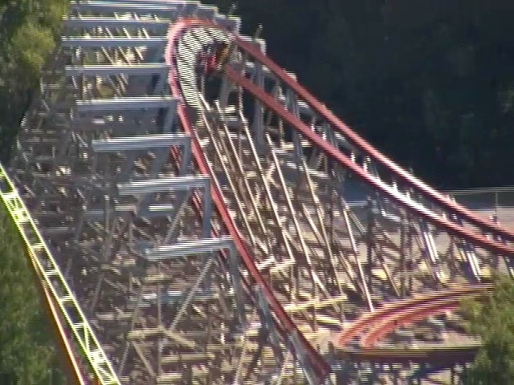
But seriously, this thing may not be as good as Steel Vengeance, but it still is one of the better RMCs and just a TON of fun. =)
 Well, they all can't be amazing RMCs. Time to really get into the credit whoring.
Well, they all can't be amazing RMCs. Time to really get into the credit whoring.
 Yeah. It's just their Wild Mouse. Well, at least this is one of the big drop models.
Yeah. It's just their Wild Mouse. Well, at least this is one of the big drop models.
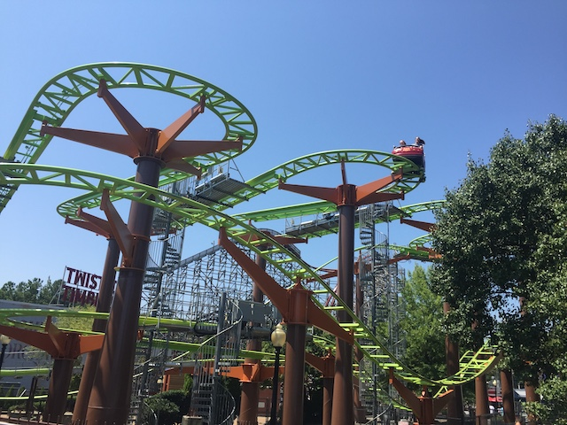
I'll give them credit on the name. Apple Zapple is....I'm not sure if I love this name or hate it. It's stupid, but enjoyably stupid! Kind of like the Family Banana Coaster! Except at least that was a kiddy coaster!
OK. But where's the Zapple?
Meh. There is nothing grand about this carousel.
I see you're hyping up your newest coaster Kings Dominion (and I don't blame you. That ride kicks ass).
Thank you Drink Pass. You're already worth it thanks to how hot it is at Kings Dominion.
 Our quest for credits at Kings Dominion continues with Racer 75.
Our quest for credits at Kings Dominion continues with Racer 75.
 So this ride used to be called Rebel Yell, named after the famous Rebel Yell Scream from the Civil War. But the name was changed to Racer 75 last year since....the Confederacy was bad....and Virginia has recently come under fire for....trying to preserve this problematic past. So yeah. Rebel Yell had to go, and now it's Racer 75.
So this ride used to be called Rebel Yell, named after the famous Rebel Yell Scream from the Civil War. But the name was changed to Racer 75 last year since....the Confederacy was bad....and Virginia has recently come under fire for....trying to preserve this problematic past. So yeah. Rebel Yell had to go, and now it's Racer 75.
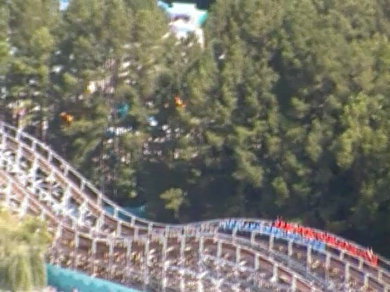
So while this is essentially a clone of Racer @ Kings Island, I was surprised to find out....this version is worse.
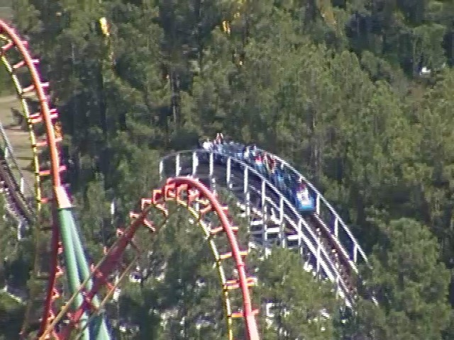
I don't know why, but for some reason, this ride has some REALLY bad jackhammering and feels like its full of potholes. Also, this one rarely races. =(
 I'm really hoping that it was just a one-off ride and that it'll be better and smoother in the future. Oh well. It's only Racer 75. Not like that's a high priority ride anyways.
I'm really hoping that it was just a one-off ride and that it'll be better and smoother in the future. Oh well. It's only Racer 75. Not like that's a high priority ride anyways.
"Help! I'm Mr. Sloth! Jason won me at Kings Dominion, and I've been trapped in the trunk of Kevin's car ever since getting back to California! Please let me out!"
Ooh! I love it whenever parks have giant drop towers! And this is one of the biggest!
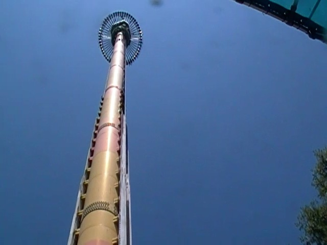
Yeah. One of the best drop towers out there. =)
I'm sorry to report that like so many other bumper cars in this country, are sh*t.
Yep. These bumper cars also have idiotic one-way rules, and also suck major donkey balls.
Hmm. It doesn't seem like any of the rides are even remotely jungle-themed, but....aparrently there's a Safari area in Kings Dominion.
Hey look! They have a Hungry Hungry Hippos resteraunt here. Please tell me they only serve little plastic white balls there. ;)
Aww. Backlot Stunt Coaster is closed. Hoping it opens up later in the day and I can get this credit.
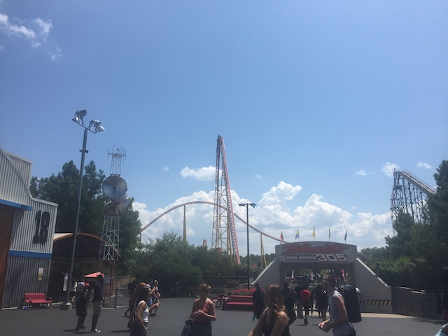
OK! I've waited long enough! Time to finally get on one of the few ultra-high priority bucket list coasters still needed in not only the U.S, but also the world (my international travel REALLY slashed that list down). Intimidator 305.
 Yeah. We were on the Carowinds Intimidator a couple days ago (as well as a couple years ago too). But now it's time to ride the BADASS version.
Yeah. We were on the Carowinds Intimidator a couple days ago (as well as a couple years ago too). But now it's time to ride the BADASS version.
 HOLY SH*T!!!! SO F*CKING GOOD!!! COASTERGASM!!!! *drool* (Yeah. I like it)
HOLY SH*T!!!! SO F*CKING GOOD!!! COASTERGASM!!!! *drool* (Yeah. I like it)
Those laterals are SO STRONG!!! I'd say they're Maverick-like, except that doesn't do this ride justice. It is so strong and so good.
 Fine. We can do something less intense. Flight of Fear is always a fun ride.
Fine. We can do something less intense. Flight of Fear is always a fun ride.
I know it's fun and all, but when you rode Jokers Jinx just a week ago, this is suddenly much weaker. =(
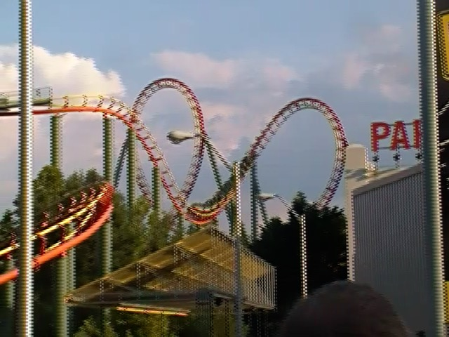
Hi Kings Island! How's it going with Vortex!? >=)
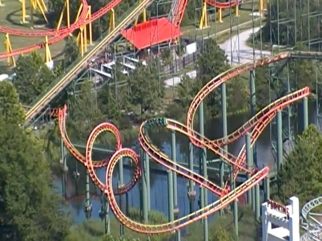
So Anaconda is....an intersting ride. It's not painful or anything. But it's kinda slow, mediocre, and especially in the 2nd half, it has some REALLY awkward and clunky transitions that REALLY feel like they were designed with a coathanger.
 Normally, I wouldn't be saying anything more about Anaconda since...it's not a great ride by any means. But with how rare its ride type is (I really appreciate Viper @ SFMM), and Cedar Fair's eagerness to demolish old rides, I'd recommend riding Anaconda while you're at Kings Dominion.
Normally, I wouldn't be saying anything more about Anaconda since...it's not a great ride by any means. But with how rare its ride type is (I really appreciate Viper @ SFMM), and Cedar Fair's eagerness to demolish old rides, I'd recommend riding Anaconda while you're at Kings Dominion.
Ooh! Giant plot of cleared land! I wonder what they're constructing....oh wait. That's Volcano's grave. ='(
 So sad that they decided to remove this coaster RIGHT BEFORE I finally make it out to Kings Dominion.
So sad that they decided to remove this coaster RIGHT BEFORE I finally make it out to Kings Dominion.
This looked like a really fun, VERY unique coaster. So naturally, me missing it makes me sad. Hopefully something really good gets built in that spot.
 Well....at least they still have Avalanche.
Well....at least they still have Avalanche.
 I know it doesn't seem unique since I've ridden three of these in Europe. But this is the only Mack Bobsled in the US. So for those who can't travel internationally (and are Americans), this is a really rare ride for them.
I know it doesn't seem unique since I've ridden three of these in Europe. But this is the only Mack Bobsled in the US. So for those who can't travel internationally (and are Americans), this is a really rare ride for them.
"Hey look! We started the Incrediblecoasters Bobsled Team! Take that East Germany!"
 This may be the weakest of the Mack Bobsleds, but it's still a lot of fun. Wish these rides were more popular.
This may be the weakest of the Mack Bobsleds, but it's still a lot of fun. Wish these rides were more popular.
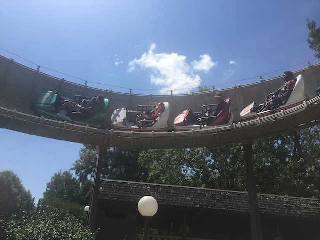
Just need the one at Blackpool Pleasure Beach (Seriously need to get to the U.K! Next major international trip!), then I'll have conquered all the Mack Bobsleds!
Hey look! They still have the Crypt! Gotta go check that out!
I know this didn't have the great effects it used to, but it's still the 2nd best Top Spin ever (only behind Talcon @ Phantasialand). And Top Spins are rare now, so you have to check it out, especially since it's one of the best ones. And to top it all off, Kings Dominion decided to remove the Crypt for 2020. Aww. That makes me sad. This ride was really fun.
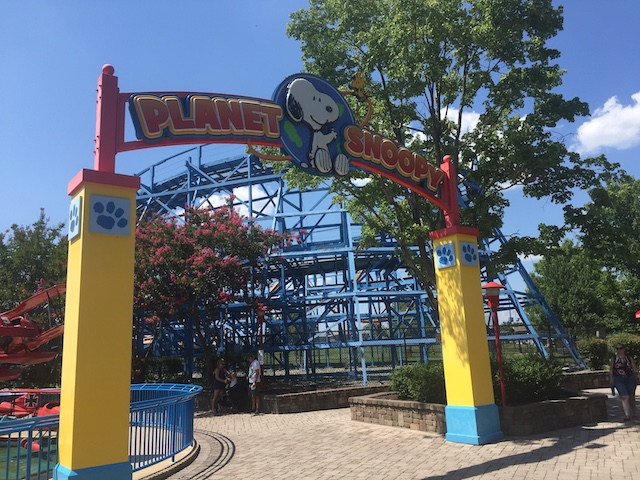
Planet Snoopy!? OH NO!!! Please don't tell me we're doing what I think we are!
 Oh. We're just doing the Boo Blasters ride? Thank god.
Oh. We're just doing the Boo Blasters ride? Thank god.
 R.I.P to all the RCT peeps who drowned.
R.I.P to all the RCT peeps who drowned.
I know it's just a simple dark ride, but it's still a lot of fun.
Yeah. My score sucks on this ride.
"You blockhead!"
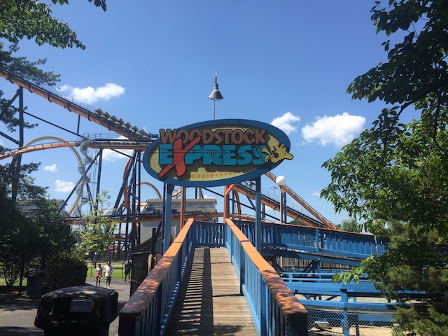
Oh. And we're also here to credit whore.
It may be a kiddy coaster, but those kiddy woodies are actually a lot of fun.
Cha-Ching!
 "Why are we riding this random ride? I don't know!"
"Why are we riding this random ride? I don't know!"
 Hey Dominator! I haven't seen you since you were at Geauga Lake 12 years ago! How's the new home treating you?
Hey Dominator! I haven't seen you since you were at Geauga Lake 12 years ago! How's the new home treating you?
 So yeah. Dominator may not be a new credit, but it's still my favorite floorless coaster and I'm more than happy to ride it again!
So yeah. Dominator may not be a new credit, but it's still my favorite floorless coaster and I'm more than happy to ride it again!
Gee. I wonder if I'm at Kings Dominion on a good day?
 I've ridden A LOT more floorless coasters since my visit to Geauga Lake, but Dominator is still the best one.
I've ridden A LOT more floorless coasters since my visit to Geauga Lake, but Dominator is still the best one.
 OK. Why is the loop yellow when the rest of the ride orange? I know on Green Lantern @ SFGADV, it's lazy theming because Green Lantern hates yellow (You're a lame superhero if all it takes to defeat you is the color yellow). But why on Dominator? What's the bullsh*t reason here?
OK. Why is the loop yellow when the rest of the ride orange? I know on Green Lantern @ SFGADV, it's lazy theming because Green Lantern hates yellow (You're a lame superhero if all it takes to defeat you is the color yellow). But why on Dominator? What's the bullsh*t reason here?
 So the primary reason I prefer Dominator to other more popular floorless coasters, such as Superman: Krypton Coaster (2nd favorite) is because its got a more unique layout. It's got more banked turns and fun stuff like that and isn't the standard Loop, Dive Loop, Heartline Spin, Cobra Roll, Midcourse Brakes, 2nd Half with Corkscrews Layout.
So the primary reason I prefer Dominator to other more popular floorless coasters, such as Superman: Krypton Coaster (2nd favorite) is because its got a more unique layout. It's got more banked turns and fun stuff like that and isn't the standard Loop, Dive Loop, Heartline Spin, Cobra Roll, Midcourse Brakes, 2nd Half with Corkscrews Layout.
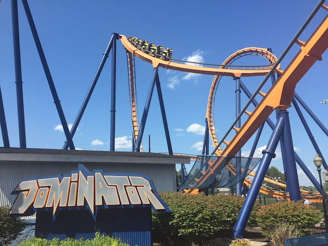
Plus, the inversions are fast and snappy.
 I prefer the setting on Geauga Lake, but hey. As long as Dominator is still alive kicking ass, I'm happy.
I prefer the setting on Geauga Lake, but hey. As long as Dominator is still alive kicking ass, I'm happy.
So I rode, got my shots, and was hoping on having myself a little mini-marathon. But...it breaks down right as I'm about to reride. Ugh! Bad timing!
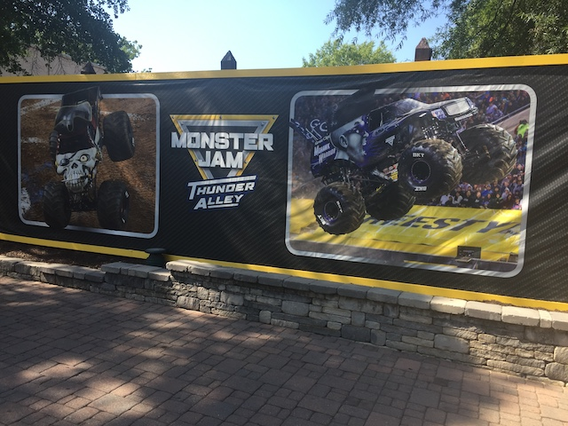
Hmm. I didn't think Kings Dominion was that deep in the South. I figured that something like Monster Truck Rally would be more popular at a park like Carowinds. =P
*gasp* "I see the Eiffel Tower! Are we in Paris!?"
"No you idiot! It's a replica! We're at Kings Island!"
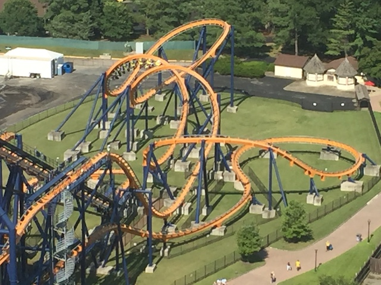
And of course, if you know us, you'll know we came up here to get a ton of ariel shots (as you can tell since we've been sprinkling them throughout the update).
 I305 from the Eiffel Tower.
I305 from the Eiffel Tower.
Nice view of their....interesting looking frisbee, along with some other coasters.
Where am I and what time is it?
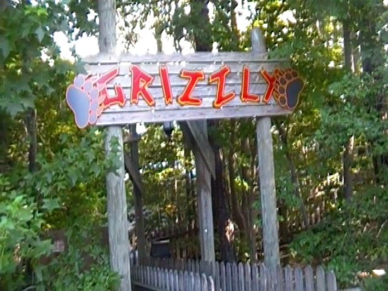
Oh crap. They also have a Grizzly here too!? Blugh!
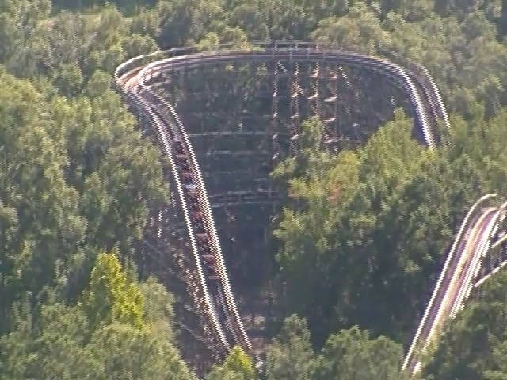
Have no fear! This ride may be far rougher than the CGA version, it's also WAY more fun. So naturally, it's a MUCH better ride (though granted, that's not a hard goal to achieve),
Hmm. I didn't think this was gonna turn into a family reunion trip.
These jams look good, but not nearly as good as the stuff at Dollywood and Busch Gardens Williamsburg.
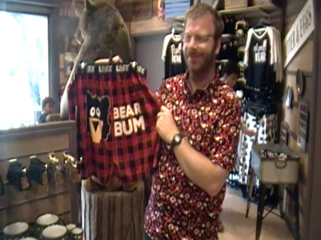
Oh don't worry. I know a few people who enjoy bear bums. =P
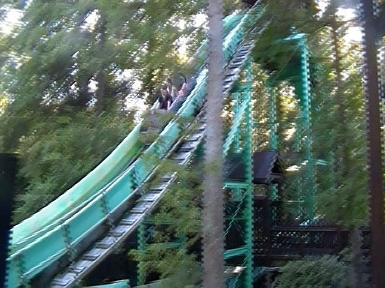
Sure. This may not be the best log flume or anything, but it's a hot day, and we're having fun. =)
SPLOOSH!!!
LAME!!! Why can't you be cool like the Carowinds Flyers!?
 All right. More Twisted Timbers ride. And....those barrel roll drops are so good *drool*.
All right. More Twisted Timbers ride. And....those barrel roll drops are so good *drool*.
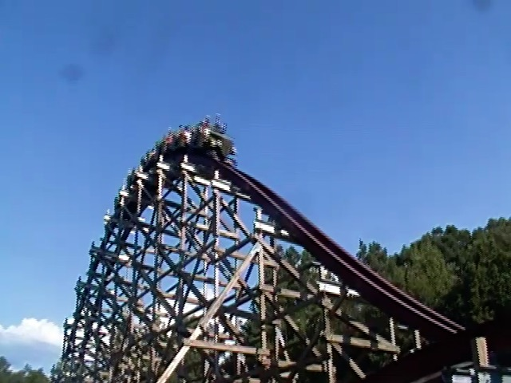
So what's different about Twisted Timbers from other RMCs is that its a bit more of a traditional airtime coaster. This ride has far more regular hills than your standard RMC. But hey. It has a LOT of ejector air, and that's always good with me. =)
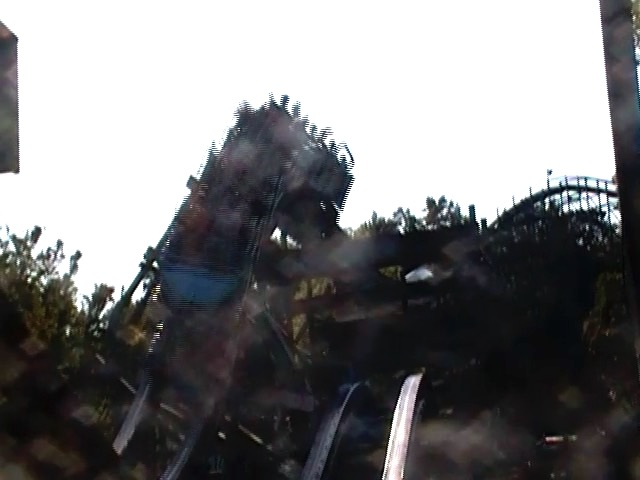
But don't worry. It still has the RMC classics, like twisty hills, barrel roll inversions, and of course, that crazy barrel roll drop is really great.
 Sorry Fury 325. I know you're still incredibly good and still a Top 10 Coaster, but you're not the best Giga Coaster anymore. I305 is (which BTW, also means it too, is a Top 10 Coaster).
Sorry Fury 325. I know you're still incredibly good and still a Top 10 Coaster, but you're not the best Giga Coaster anymore. I305 is (which BTW, also means it too, is a Top 10 Coaster).
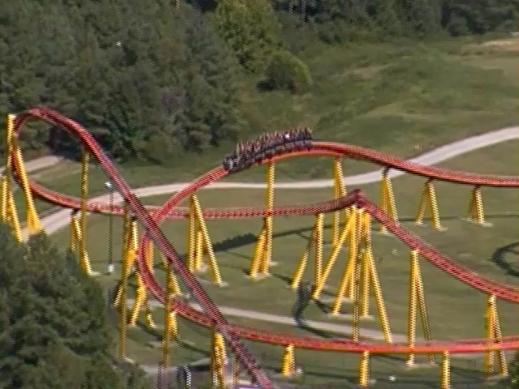
I know some enthusiasts are put off by the fact that it's very positve and lateral G heavy, isn't about airtime, and is too intense (PUSSIES!!!). But the intensity is exactly what makes this ride so great (Seriously, I305 is the only coaster that's made me blackout).
 I305 MARATHON!!! =D
I305 MARATHON!!! =D
*Sigh* Backlot Stunt Coaster STILL hasn't opened up. The good news is that I'm seeing the ride testing. The bad news is that in order to return our rental car on time back at Dulles, we pretty much have to leave right now. Now if this was I305 or Twisted Timbers, I would've said "F*CK IT!!!", kept my fingers crossed that it would open up at the end, hopefully ride it, and paid the late fee. But with Backlot Stunt Coaster? No. It's a fun ride at Kings Island & Canada's Wonderland, but nothing special. Plus, I've ridden clones of it. That ride, plus getting a new credit, is NOT worth the late fee. Oh well. Now I have something to look foreward to next time I'm back at Kings Dominion.
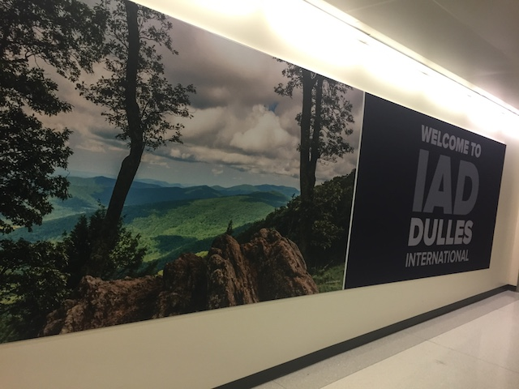
And we're back at Dulles Airport, and that was the Mid-Atlantic 2019. It was great to finally hit the one part of the country that I hadn't visited and visit the last major parks I still needed. All the new parks were great (Even SFA, which true, isn't great, but it was much better than I was expecting). And it was a lot of fun revisiting some great parks (Copperhead Strike is a lot of fun, and Lightning Rod is AMAZING!!!), even if we wound up visiting Dollywood on one of the worst possible days. And of course, there was a lot of non-coaster fun as well. I'm all done with the major parks, however, it has been over a decade since I've hit some of those parks, which have GREATLY expanded (The plan was to hit a couple of those this year, but that trip is almost certainly cancelled due to this f*cking pandemic ='( LAME!!!!!). But yeah. With the exception of the worst hotel ever at the begenning, this trip was a total success.
Home
|